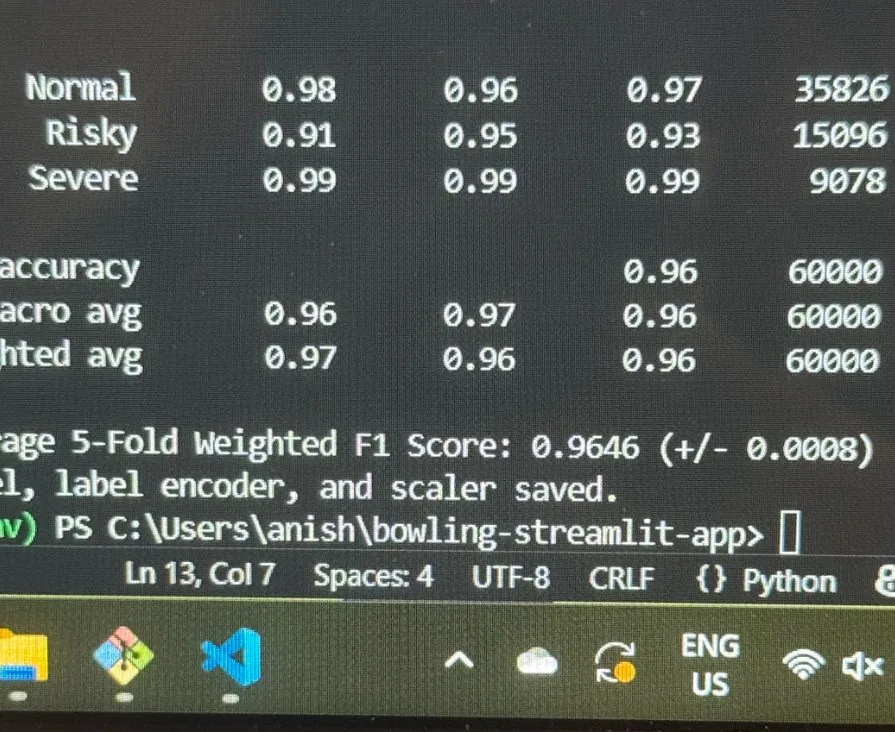
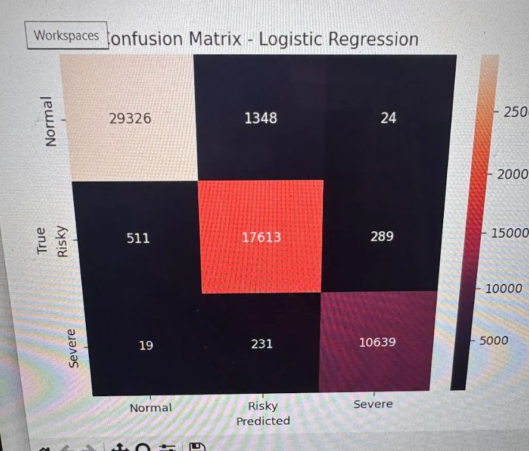

Cricket bowling risk analyzer
| Type | Individual project |
|---|---|
| Dates | May – October 2025 |
| Stack | Python, MediaPipe, Streamlit |
A bowling injury kept me out of cricket for months. I taught myself machine learning at a Harvard AI bootcamp and built a tool that flags risky bowling mechanics before they cause an injury, then used it to fix my own action.
The failure that mattered
I spent hours with Level 2 and Level 3 ICC-recognized coaches (several of whom played for and coached top-ranked cricket nations) to learn what actually makes a bowling action risky, and the safe ranges for spine, knee, shoulder and elbow angles and hip-to-shoulder separation. Using Google's MediaPipe I extracted joint-angle vectors from bowling video, and then hit the real problem: there are not enough clean bowling videos publicly available to train a reliable model.
So I generated synthetic data. My first generator produced data clean enough that a model trained on it scored 99.9969% accuracy (two predictions wrong out of 65,097). That is not a good model; it is a model that has learned a generator. I rebuilt it to inject controlled randomness mimicking camera noise and natural variation in bowling form, which brought accuracy down to a far more trustworthy 96%.
Pushing a number down on purpose is the single most useful thing I have done as an engineer. The 96% describes something real; the 99.9969% described my own assumptions reflected back at me.
The app


The app is built in Streamlit. It gives an overall risk summary first, then lets you step through the uploaded video frame by frame to see the pose estimation and the risk feedback together, deliberately, so a user can see when the tracker itself has lost the plot rather than trusting a score built on bad landmarks. A separate clip-level model handles full-video analysis.
Outcome
Using the tool on my own action helped me return to bowling 25% longer and 6% faster. I went through injury rehabilitation across 2024 and 2025 and now play for the Georgia Tech Cricket Club.